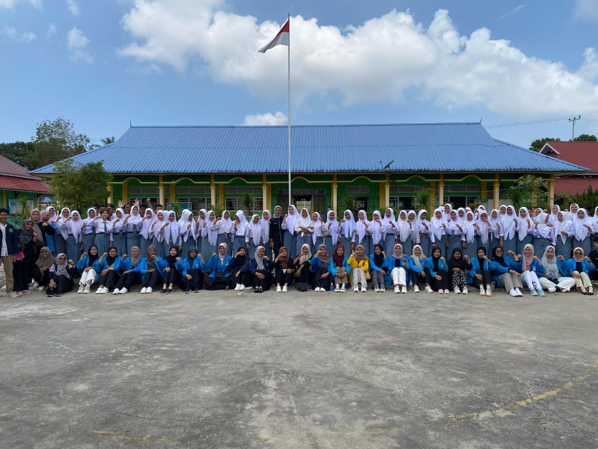

HIMK Tanjungpinang-Bintan Laksanakan Sosialisasi Perguruan Tinggi, Jalur Masuk Dan Beasiswa Di Pulau Kundur, Kabupaten Karimun
Pengenalan Kegiatan
Himpunan Mahasiswa Kundur (HIMK) Tanjungpinang-Bintan Periode 2023-2024 telah melaksanakan kegiatan sosialisasi pengenalan Perguruan Tinggi Negeri, Perguruan Tinggi Swasta, jalur masuk kuliah, serta beasiswa. Kegiatan ini ditujukan bagi para siswa/i SMA/SMK/MA di Pulau Kundur, terutama bagi mereka yang ingin melanjutkan pendidikan di PTN atau PTS di Tanjungpinang-Bintan.
Pada kegiatan sosialisasi ke-12, HIMK mengusung tema “Merajut Asa Menggapai Cita”, yang berarti kegiatan ini menjadi upaya dalam mewujudkan harapan serta dorongan penuh semangat kepada calon mahasiswa untuk meraih cita-cita mereka. Kegiatan ini berlangsung selama enam hari, mulai dari Senin, 29 Januari 2024 hingga Sabtu, 03 Februari 2024, dengan sasaran siswa/i kelas 12 SMA/SMK/MA di Pulau Kundur.
Antusiasme dan Masalah yang Dihadapi
Ketua panitia Agung Catur Saputra menyatakan rasa senangnya karena kegiatan ini dapat diselenggarakan dengan lancar. Ia melihat antusiasme tinggi dari para siswa yang ingin melanjutkan kuliah di Tanjungpinang-Bintan. Ini menunjukkan bahwa minat untuk melanjutkan pendidikan ke PTN dan PTS masih sangat tinggi.
"Siswa/i sangat antusias mengajukan pertanyaan kepada rekan-rekan HIMK. Pertanyaan didominasi oleh jalur masuk kampus negeri atau swasta di Tanjungpinang-Bintan, dan beasiswa yang selalu menjadi pembahasan utama di setiap sekolah yang dikunjungi," jelas Agung.
Permasalahan utama dalam melanjutkan pendidikan ke perguruan tinggi adalah masalah ekonomi, yang hampir meredupkan semangat calon mahasiswa. Sebagian dari mereka sebelumnya hanya tahu sedikit tentang beasiswa dan merasa persyaratannya sulit terpenuhi.
"Namun, dengan dipaparkannya informasi tentang beasiswa, siswa/i kembali bersemangat dan bersedia mempersiapkan diri mulai sekarang untuk menghadapi seleksi," tutup Agung.
Tujuan dan Harapan
Ketua Umum HIMK Tanjungpinang-Bintan, M. Teo Renaldi, mengatakan bahwa sosialisasi terkait perguruan tinggi, jalur masuk, dan beasiswa ini sudah menjadi agenda tahunan HIMK. Kegiatan ini digagas untuk memberikan informasi tentang kehidupan kampus dan bagaimana menjadi seorang mahasiswa, terutama di Tanjungpinang-Bintan, kepada siswa-siswi SMA, SMK, MA, dan pondok pesantren di Tanjungbatu dan sekitarnya.
Kegiatan sosialisasi ini sudah yang ke-12 kalinya. Tujuannya adalah untuk merangkul siswa-siswi di Tanjungbatu dan sekitarnya agar terus melanjutkan pendidikan mereka, serta sebagai prasarana pembelajaran bagi mahasiswa Kundur sendiri di kampung halamannya.
"Saya memberikan apresiasi penuh dan ucapan terima kasih kepada anggota HIMK yang telah mendedikasikan diri untuk melaksanakan kegiatan ini. Meskipun ada beberapa kendala di lapangan, itu tidak membuat teman-teman patah semangat dalam menjalankan dan mensukseskan kegiatan sosialisasi ini hingga selesai," tutup Teo.
Penulis: Dea Ayu Putri